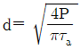
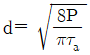
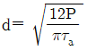
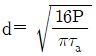
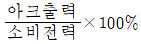
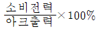
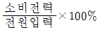
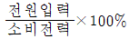
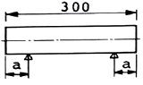

사출(프레스)금형설계기사 (2016-05-08 기출문제)
1과목: 금형설계
1. 핀포인트 게이트의 특징이 아닌 것은?
- 변형하기 쉬운 성형품에 다점 주입을 할 수 있다.
- 성형품에 직접 충전되는 게이트로서 압력손실이 적다.
- 게이트의 위치가 비교적 제한받지 않고, 자유롭게 결정된다.
- 게이트 부위는 절단하기 쉬우므로, 금형의 형개력(型開力)에 의해 자동 절단된다.
(정답률: 59%)

2. 사출성형품 설계 시 빼기 구배에 대한 설명으로 틀린 것은?
- 성형품을 쉽게 빼내기 위해서 가능한 한 크게 설계한다.
- 성형 수축률이 적은 재료는 가능한 한 구배를 크게 한다.
- 성형품의 형상 및 성형재료의 종류에 따라 빼기 구배를 다르게 준다.
- 컵과 같은 제품은 외면측보다 내면측에 빼기 구배를 약간 적게 주는 것이 좋다.
(정답률: 70%)
3. 스크루의 지름이 42㎜이고 사출속도가 5㎝/sec일 때, 사출율[cm3/sec]은 약 얼마인가?
- 67.3
- 69.3
- 70.5
- 78.2
(정답률: 74%)
4. 금형 조립 시 사용되는 핀을 설계할 때, 전단응력에 대해 필요한 핀의 지름을 구하는 식으로 옳은 것은? (단, P는 하중, τa 는 허용 전단 응력이다.)




(정답률: 75%)
5. 다음 중 성형품의 구멍이 있는 깊은 보스(boss)부위에 직접 접촉하여 성형품을 밀어내는 데 사용되는 가장 적합한 금형 부품은?
- D형 핀
- 슬리브 핀
- 블레이드 핀
- 밸브 헤드 핀
(정답률: 94%)
6. 다음 중 물통이나 컵과 같은 성형품을 밀어내기시 진공상태로 되는, 깊고 얇은 성형품을 밀어내기에 가장 적당한 방식은?
- 공기압 이젝터 방식
- 슬리브 이젝터 방식
- 가이드 핀 이젝터 방식
- 이젝터 핀에 의한 방식
(정답률: 81%)
7. 언더컷 처리에 대한 설명으로 틀린 것은?
- 구조가 복잡하다.
- 이형이 어렵게 된다.
- 성형사이클이 단축된다.
- 성형불량의 원인이 될 수 있다.
(정답률: 85%)
8. 성형품의 호칭치수 200㎜이며, 성형 수지의 수축률이 15/1000일 때, 상온의 금형치수는 약 얼마인가?
- 200.30㎜
- 203.⑤㎜
- 215.16㎜
- 230.04㎜
(정답률: 64%)
9. 러너리스(runnerless)금형의 특징으로 틀린 것은?
- 생산원가가 절감된다.
- 제품의 외관이나 물리적 특성이 좋아진다.
- 사출 용량이 적은 성형기로 성형이 가능하다.
- 성형품의 형상 및 사용 수지에 제약을 받지 않는다.
(정답률: 90%)
10. 파팅 라인(Parting line)의 선정 시 고려사항으로 틀린 것은?
- 게이트의 위치 및 형상을 고려한다.
- 언더컷이 있는 곳에 설치하도록 한다.
- 제품의 후처리가 쉬운 곳에 설치하도록 한다.
- 제품 표면 및 눈에 잘 보이는 곳은 가능한 한 피한다.
(정답률: 90%)
11. 트랜스퍼 금형의 특징으로 틀린 것은?
- 생산성이 높다.
- 작업안정성이 높다.
- 재료비를 절약할 수 있다.
- 기계설비의 초기 투자비가 낮다.
(정답률: 93%)
12. 두께가 3㎜이고, 직경이 30㎜인 제품의 블랭킹 가공을 하기 위한 펀치와 다이의 직경은? (단, 소재의 편측 클리어런스는 4%이다.)
- 펀치직경 : 29.76㎜, 다이직경 : 30㎜
- 펀치직경 : 29.88㎜, 다이직경 : 30㎜
- 펀치직경 : 30㎜, 다이직경 : 29.76㎜
- 펀치직경 : 30㎜, 다이직경 : 29.88㎜
(정답률: 64%)
13. 두께 1.8mm의 연강판을 사용하여 지름 38㎜의 구멍을 피어싱 가공할 경우 소요되는 전단력(kgf)은 약 얼마인가? (단, 전단하중은 40kgf/mm2 이다.)
- 4798.5
- 8595.4
- 12893.6
- 17691.2
(정답률: 73%)
14. 소요 공정 수에 상당하는 대수의 프레스 기계를 병렬로 배치한 프레스 라인을 통해 가공제품을 전자동으로 이송하여 각 기계간에 흐르게 하는 방법은?
- 조립 가공
- 트랜스퍼 가공
- 파인블랭킹 가공
- 프로그레시브 가공
(정답률: 78%)
15. 용기 또는 판재에 장식, 보강, 변형제거의 목적으로 끈 모양의 돌출부를 내는 가공은?
- 비딩(beading)
- 벌징(bulging)
- 시밍(seaming)
- 사이징(sizing)
(정답률: 67%)
16. 두께 1㎜, 지름 100㎜의 원형 소재를 가지고 지름 40㎜의 원통컵을 만들고자 할 때 필요한 드로잉 공정 수는? (단, 초기 드로잉률은 0.55, 2공정 이후의 재드로잉률은 0.8로 계산)
- 1공정
- 2공정
- 3공정
- 4공정
(정답률: 56%)
17. 다음 금형 부품 중 가공 압력에 의한 변형 및 파손 방지를 위해 충분한 강도를 갖도록 반드시 열처리를 해야 하는 부품은?
- 다이홀더
- 펀치홀더
- 펀치 고정판
- 다이플레이트
(정답률: 75%)
18. 프레스 기계의 점검 사항 내용이 아닌 것은?
- 클러치의 동작 상태
- 안전장치의 동작 상태
- 램의 섕크 고정볼트 조임 상태
- 가이드 핀과 부시의 슬라이딩 상태
(정답률: 89%)
19. 프로그레시브 금형가공에서 캐리어(carrier)의 가장 큰 역할로 적합한 것은?
- 소재 잔폭을 결정한다.
- 재료의 이용률을 높게 한다.
- 블랭크의 이빠짐 현상을 방지한다.
- 반 가공 제품을 다음 공정으로 정확하게 운송한다.
(정답률: 77%)
20. 가동식 스트리퍼의 설명으로 틀린 것은?
- 펀치를 고정시킨다.
- 가공한 제품의 거스러미가 적다.
- 펀치가 소재에 박힐 때까지 안내한다.
- 스트립을 누르면서 가공하기 때문에 제품이 휘지 않는다.
(정답률: 73%)
2과목: 기계제작법
21. 주형을 만드는 데 사용되는 주물사의 구비조건이 아닌 것은?
- 반복 사용하여도 노화하지 않을 것
- 용탕의 압력에 견딜 만한 고온 강도
- 용탕의 온도에 견딜 만한 내화 온도
- 용탕에서 나오는 가스를 외부로 배출시키지 않을 것
(정답률: 87%)
22. 합금 주철에 첨가되는 원소의 영향으로 틀린 것은?
- 크롬은 경도, 내열성, 내부식성이 증가한다.
- 니켈은 얇은 부분은 칠(chill)발생을 방지한다.
- 몰리브덴은 흑연화를 방지하며, 경도를 증가시킨다.
- 바나듐은 흑연을 조대화시키고, 흑연화를 촉진시킨다.
(정답률: 77%)
23. 드로잉(drawing)시 역장력을 가함으로써 얻어지는 효과에 대한 설명으로 틀린 것은?
- 다이 수명이 증가된다.
- 드로잉 저항이 감소된다.
- 다이면에 발생되는 압력이 증가된다.
- 가공된 제품의 기계적 성질이 좋아진다.
(정답률: 73%)
24. 절삭 작업에서 절삭저향력이 300kgf, 절삭속도가 75m/min일 때 절삭동력은 몇 PS인가?
- 3
- 5
- 7
- 9
(정답률: 70%)
25. 지름 6㎜, 날수 6개인 엔드밀을 사용하여 회전수 1500rpm, 이송속도 1800㎜/min로 가공할 때, 날 1개당 이송량(㎜)은?
- 0.1
- 0.2
- 0.3
- 0.4
(정답률: 62%)
26. 삼침법에서 나사산이 각도 60°인 미터나사의 유효지름(De)을 구하는 식이 옳은 것은? (단, M은 삼침을 나사 홈에 접촉 후 측정한 외측거리, W는 삼침의 지름, P는 미터나사의 피치이다.)
- De = M + 3 W - 0.86601 P
- De = M - 3 W + 0.86603 P
- De = M - 5 W + 0.966⑤ P
- De = M + 3 W - 0.96607 P
(정답률: 70%)
27. 방전가공 시 전극 재질로 적합하지 않은 것은?
- 구리
- 황동
- 세라믹
- 그라파이트(흑연)
(정답률: 87%)
28. 다음 중 구멍의 내면을 가장 정밀하게 가공하는 방법은?
- 쏘잉(sawing)
- 호닝(honing)
- 펀칭(punching)
- 드릴링(drilling)
(정답률: 83%)
29. 강을 A3 ~ Acm 변태점보다 높은 온도로 가열하여 조직을 변화시킨 후 공랭시키는 열처리 방법은?
- 뜨임
- 불림
- 질화법
- 침탄법
(정답률: 53%)
30. 교류아크 용접기에서 효율(%) 계산식으로 옳은 것은?




(정답률: 73%)
31. 절삭저항을 3분력 중 주분력 P1, 이송분력 P2, 배분력 P3일 때 크기 비교가 옳은 것은? (단, 공구는 초경바이트 피삭재는 저탄소강, 절삭 깊이는 노즈 반지름 이내로 가공할 때이다.)
- P1 ＞ P2 ＞ P3
- P1 ＞ P3 ＞ P2
- P3 ＞ P1 ＞ P2
- P3 ＞ P2 ＞ P1
(정답률: 61%)
32. 용접이음의 안전율에 영향을 미치는 요소가 아닌 것은?
- 시공조건
- 재료의 용접성
- 용접사의 심리상태
- 구조상의 노치부 회피
(정답률: 81%)
33. 절삭공구 재료 중 다이아몬드의 특징이 아닌 것은?
- 장시간 고속 절삭이 가능하다.
- 날 끝이 손상되면 재가공이 어렵다.
- 금속에 대한 마찰계수 및 마모율이 크다.
- 표면 거칠기가 우수한 면을 얻을 수 있다.
(정답률: 74%)
34. 래핑가공의 특징으로 틀린 것은?
- 정밀도가 높은 제품을 얻을 수 있다.
- 가공면은 윤활성 및 내마모성이 좋다.
- 가공이 간단하고 대량생산이 가능하다.
- 먼지가 발생하지 않아 작업장의 청결을 유지하기 쉽다.
(정답률: 82%)
35. 전해연마 가공법의 특징이 아닌 것은?
- 가공면에 방향성이 없다.
- 복잡한 형상의 제품도 연마가 가능하다.
- 가공 변질층이 있고 평활한 가공면을 얻을 수 있다.
- 연질의 알루미늄, 구리 등도 쉽게 광택면을 얻을 수 있다.
(정답률: 64%)
36. 다이 내의 테이퍼 구멍으로 소재를 잡아당겨서 테이퍼 구멍과 동일한 단면의 봉재, 관재, 선재를 제작하는 가공방법은?
- 압연
- 압출
- 인발
- 전조
(정답률: 74%)
37. 사인바에서 오차가 크게 발생하게 되는 각도는?
- 15도
- 25도
- 35도
- 45도
(정답률: 75%)
38. 선반에서 절삭에 필요한 전 소비동력에 해당하지 않는 것은?
- 손실동력
- 이송동력
- 회전동력
- 유효절삭동력
(정답률: 53%)
39. 선반에서 경사면 위를 연속적으로 흘러 나가는 모양의 칩이 발생되기 위한 조건이 아닌 것은?
- 경사각이 클 때
- 절삭속도가 빠를 때
- 절삭깊이가 많을 때
- 윤활성이 좋은 절삭제를 사용할 때
(정답률: 72%)
40. 알루미늄 합금과 마그네슘 합금 등의 주조에 주로 사용하나, 금형의 선택 조건이 까다롭고 비싸므로 대량 생산에 주로 이용되는 주조법은?
- 원심 주조법
- 칠드 주조법
- 다이캐스팅법
- 셀 몰드 주조법
(정답률: 89%)
3과목: 금속재료학
41. 섬유강화금속(FRM)의 특성이 아닌 것은?
- 비강도 및 비강성이 낮다.
- 2차성형성 및 접합성이 있다.
- 섬유축 방향의 강도가 크다.
- 고온의 역학적 특성 및 열적안정성이 우수하다.
(정답률: 64%)
42. 조밀육방격자로만 짝지어진 것은?
- Fe, Cr, Mo
- Pb, Ti, Pt
- Mg, Zn, Cd
- Al, Ni, Cu
(정답률: 63%)
43. 크리프 시험에 대한 설명 중 틀린 것은?
- 크리프의 3단계 중 1단계를 정상크리프라 한다.
- 어떤 재료가 크리프가 생기는 요인은 온도와 하중과 시간이다.
- 어떤 시간 후에 크리프가 정지하는 최대 응력을 크리프 한도라 한다.
- 철강 및 합금 등은 250℃ 이상의 온도가 되어야 크리프 현상이 일어난다.
(정답률: 54%)
44. 일반구조용강에서 청열취성이 원인이 되는 고용 성분은?
- N
- V
- Al
- Nb
(정답률: 62%)
45. 오스테나이트계 스테인리스강의 부식 현상에 관한 설명으로 틀린 현상은?
- 공식 발생을 일으키는 주요 이온은 Cl-, F-, Br-이다.
- 고온(1000~1150℃)에서 가열 후 급냉하면 입계부식을 방지할 수 있다.
- 공식 발생 대책은 재료 중에 C를 많게 하거나 Ni, Cr, Mo, I, N 등을 적게 한다.
- 입계부식의 방지대책은 C 와의 친화력이 Cr보다 큰 Ti, Nb, Ta을 첨가해서 안정화 시킨다.
(정답률: 53%)
46. 아연(Zn)의 특성에 대한 설명으로 틀린 것은?
- 융점은 약 420℃ 이다.
- 고온의 증기압이 높다.
- 상온에서 면심입방격자이다.
- 일반적으로 25℃에서 밀도는 약 7.13g/cm3 이다.
(정답률: 60%)
47. 다음의 강재 중 탄소함유량이 가장 많은 것은?
- SKH51
- SM15C
- SCr415
- SNCM220
(정답률: 60%)
48. 신소재를 각 군으로 나눌 때 반도체군으로 구성되어 있는 것은?
- U, Th
- Cs, Na, Li
- Ge, Si, Se
- V, W, Mo
(정답률: 58%)
49. Mg계 합금이 구조재료로서 갖는 특성에 관한 설명 중 틀린 것은?
- 소성가공성이 높아 상온에서 변형이 쉽다.
- 감쇠능이 주철보다 커서 소음방지 구조재로서 우수하다.
- 비강도가 커서 휴대용 기기나 항공우주용 재료로 사용된다.
- 치수 안정성이 좋아 상온에서 100℃까지는 장시간에 걸쳐도 치수 변화가 없다.
(정답률: 56%)
50. 쾌삭강(快削鋼)의 제조에서 쾌삭성을 향상시키는 원소가 아닌 것은?
- S
- Se
- Cr
- Pb
(정답률: 54%)
51. 분말야금법의 특징을 설명한 것 중 틀린 것은?
- 절삭공정을 생략할 수 있다.
- 다공질의 금속재료를 만들 수 있다.
- 용해법으로 만들 수 없는 합금을 만들 수 있다.
- 제조과정에서 융점이상까지 온도를 올려야 한다.
(정답률: 70%)
52. 다음 중 항온열처리 방법이 아닌 것은?
- 마퀘칭(Marquenching)
- 마템퍼링(Martempering)
- 인상 담금질(Time quenching)
- 오스템퍼링(Austempering)
(정답률: 79%)
53. 모넬 메탈(Monel metal)을 설명한 것 중 옳은 것은?
- Ni에 Al을 첨가하여 주조성을 높인 합금이다.
- 일명 백동이라 하며 가공성과 절삭성을 개선한 합금이다.
- Ni(60~70%)에 Cu 를 첨가하여 내식성, 내마모성을 향상시킨 합금이다.
- R - monel은 소량의 Si 를 넣어 강도를 향상시키고 절삭성을 저하한 합금이다.
(정답률: 49%)
54. 금속의 강화기구 중 강도와 인성을 동시에 증가시키는 데 가장 효과적인 방법은?
- 고용강화
- 가공경화
- 분산강화
- 결정립미세화강화
(정답률: 73%)
55. 다음 중 주철을 접종처리하는 가장 큰 이유는?
- 기지조직을 조대화 하기 위해서
- 흑연형상의 개량을 방지하기 위해서
- 주철에서 chill화를 촉진하기 위해서
- 결정의 핵생성을 촉진하고 조직 및 성질을 개선하기 위해서
(정답률: 56%)
56. Al-Cu-Si계 합금으로 Si 에 의하여 주조성을 개선하고, Cu 에 의해 피삭성을 좋게 한 합금의 명칭은?
- 라우탈(Lautal)
- 슈퍼인바(Superinvar)
- 문쯔메탈(Muntz metal)
- 하이드로날륨(Hydronalium)
(정답률: 60%)
57. 6:4황동에 주석을 첨가한 것으로 판ㆍ봉 등으로 가공되어 복수기판, 용접봉 등에 사용되는 합금은?
- 델타 메탈(delta metal)
- 네이벌 브라스(navel brass)
- 두라나 메탈(durana metal)
- 애드미럴티 메탈(admiralty metal)
(정답률: 54%)
58. 강을 열간가공한 후 냉간 가공하여 제품의 치수조절, 표면 마무리 면을 아름답게 하거나 가공 경화하는 과정에서 나타나는 현상에 관한 설명으로 틀린 것은?
- 냉간가공은 잔류응력이 압축응력일 때 피로강도의 향상에 효과적이다.
- 청열취성온도 영역에서 온간가공하면 전위밀도의 증가에 따라 강도가 상승한다.
- 적층결함에너지가 낮은 오스테나이트 조직에서 경화현상이 현저하다.
- 항복점 연신을 나타내는 강을 항복점 이상으로 냉간가공하면 항복점과 항복연신이 증가한다.
(정답률: 60%)
59. 강과 주철을 구분하는 탄소(C) 함량은 약 몇 %인가?
- 0.027wt%C
- 0.8wt%C
- 2.0wt%C
- 6.67wt%C
(정답률: 64%)
60. 강의 표면을 경화시키는 쇼트 피이닝(shot peening)에 관한 설명이 틀린 것은?
- 강재의 피로한도(fatigue limit)를 높여 준다.
- 쇼트피이닝은 강재의 화학조성을 변화시키는 표면 경화법이다.
- 크랭크 축(crank shaft), 각종 기어, 스프링등의 부품에 이용된다.
- 강재의 표면경도를 높게 하고 표면층에 압축응력을 존재하게 한다.
(정답률: 65%)
4과목: 정밀계측
61. 측정에서 정확도(accuracy)와 정밀도(precision)에 관한 설명으로 틀린 것은?
- 정확도 차이가 발생하는 원인은 주로 우연오차에 의한 것이고, 정밀도 차이가 발생하는 원인은 주로 계통적 오차에 의한 것이다.
- 측정에 있어서는 정확도와 정밀도의 양쪽을 포함한 것 또는 그 어느 쪽을 지적하여 정도라 한다.
- 정확도는 한쪽으로 치우침이 작은 정도를 말하며, 정밀도는 흩어짐이 작은 정도를 말한다.
- 양적인 표시에 대해서 정확도는 모평균에서 참값을 뺀 값으로 표시하고 정밀도는 모표준편차 값으로 표시한다.
(정답률: 53%)
62. 20℃에서 50.000인 게이지 블록을 손으로 잡아서 30℃가 되었다면, 이 때의 게이지 블록 치수는 약 몇 ㎜ 인가? (단, 게이지 블록의 선팽창계수 α = 11.1 x 10-5/℃ 한다.)
- 50.006
- 50.012
- 50.⑤6
- 50.082
(정답률: 61%)
63. KS에서 규정하고 있는 표면 거칠기의 종류가 아닌 것은?(오류 신고가 접수된 문제입니다. 반드시 정답과 해설을 확인하시기 바랍니다.)
- Ra
- Rmax
- Rz
- Rq
(정답률: 43%)
64. 다음 중 3차원 측정기의 사용효과로 거리가 먼 것은?
- 측정능률의 향상
- 측정값의 불안정성
- 피로의 경감
- 데이터 정리의 자동화
(정답률: 80%)
65. 다음 중 간접 측정에 속하는 것은?
- 하이트 마이크로미터에 의한 금형부품의 높이 측정
- 삼점식 내측마이크로미터에 의한 내경의 측정
- 버니어캘리퍼스에 의한 외경의 측정
- 3침에 의한 나사 유효지름 측정
(정답률: 78%)
66. 다음 중 한계 게이지에 의한 검사로 불합격된 부품에 관한 설명으로 틀린 것은?
- 통과쪽이 불합격인 축의 경우는 허용치수보다 크기 때문이다.
- 통과쪽이 불합격인 구멍의 경우는 허용치수보다 작기 때문이다.
- 통과쪽이 불합격인 제품은 모두 재가공이 불가능한 것들이다.
- 정지쪽이 불합격인 축의 경우는 허용치수보다 작기 때문이다.
(정답률: 61%)
67. 촉침식 표면거칠기 측정기의 검출, 확대방법의 종류가 아닌 것은?
- 기계식
- 광학식
- 전기식
- 베어링식
(정답률: 78%)
68. 그린 도형에 대해 같은 중심으로 공유해서 도형의 내측에 접하는 원과 외측에 접하는 원과의 반지름차가 최소가 되는 중심을 기준으로 하는 진원도 측정 방식은?
- 최소자승 중심법
- 최소외접 중심법
- 최대내접 중심법
- 최소영역 중심법
(정답률: 56%)
69. 투영기의 투영배율이 20X일 때, 10㎛ 까지 읽을 수 있다면, 투영배율이 50X 때는 몇 ㎛ 까지 읽을 수 있는가?
- 3
- 4
- 5
- 6
(정답률: 62%)
70. 그림과 같은 300㎜의 게이지 블록을 사용하여 측정할 경우 에어리 점(airy point) a 의 값은 약 몇 ㎜ 인가?

- 63.39
- 66.09
- 68.96
- 71.58
(정답률: 57%)
71. 3차원 측정기에서 사용하는 리니어 엔코더(linear encoder)의 방식에 해당하지 않는 것은?
- 로터리식
- 광전식
- 전자 유도식
- 마그네틱 스케일 방식
(정답률: 64%)
72. 다음 중 한계게이지 설계가 옳지 않는 것은?
- 구멍의 통과측 = 구멍의 최소치수 + 마모여유 ± (게이지 제작공차/2)
- 구멍의 정지측 = 구멍의 최대치수 ± (게이지 제작공차/2)
- 축의 통과측 = 축의 최대치수 - 마모여유 ± (게이지 제작공차/2)
- 축의 정지측 = 축의 최대치수 ± (게이지 제작공차/2)
(정답률: 52%)
73. 구면계를 이용하여 곡면을 측정하고자 할 때, 측정자로부터 고정다리(엔빌)까지의 길이(r)는 15.000㎜, 평면 위의 읽음과 피 측정물 위의 읽음값의 차(높이, h)는 2.500㎜ 였다면 곡률반경 R은 약 몇 mm 인가? (단, L의 단위는 ㎜이다.)
- 46.250
- 48.250
- 49.750
- 50.⑤0
(정답률: 39%)
74. 다음 중 공기 마이크로미터로 측정하기 힘든 것은?
- 구멍 내경 측정
- 표면 거칠기 측정
- 진직도 측정
- 테이퍼 측정
(정답률: 75%)
75. 평행도 또는 평행도를 측정 시 필요한 측정기가 아닌 것은?
- 정밀 수준기
- 버니어 캘리퍼스
- 광선 정반
- 오토콜리메이터
(정답률: 79%)
76. 표면거칠기 측정에서 평가길이(evaluation length)에 대한 설명으로 가장 옳은 것은?
- 평가 대상 부품의 전체 길이이다.
- 평가 대상 단면 곡선을 특성화하는 불규칙성을 식별하는 데 사용된 X 축 방향에서의 길이이다.
- 측정을 하기 위해 촉짐이 움직인 표면의 전체 구간 길이이다.
- 평가 대상 단면 곡선을 평가하는 데 사용되는 X축 방향의 길이로 하나 이상의 기준길이를 포함할 수 있다.
(정답률: 66%)
77. 6.50 X 103 측정값의 유효 숫자는 몇 자리인가?
- 2자리
- 3자리
- 5자리
- 6자리
(정답률: 67%)
78. 다음 중 공구 현미경으로 측정할 수 있는 항목만으로 구성된 것은?
- 길이, 각도, 표면거칠기
- 각도, 표면거칠기, 윤곽
- 길이, 표면거칠기, 윤곽
- 길이, 각도, 윤곽
(정답률: 62%)
79. 대물렌즈의 집점거리가 500㎜인 오토콜리메이터에서 십자선상의 상의 이동량이 0.3㎜일 때 각도 변화는 약 몇 초(″)인가?
- 30.82″
- 40.55″
- 61.88″
- 80.58″
(정답률: 38%)
80. 원주율 π를 3.14로 하고 계산하면 오차율은 약 몇 % 인가? (단, 참값 π=3.14159로 한다.)
- 0.03%
- 0.04%
- 0.⑤%
- 0.06%
(정답률: 60%)